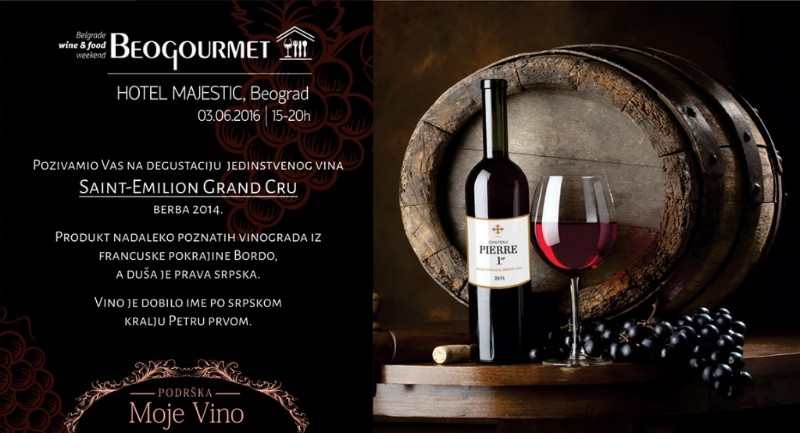

Technology
- Using mobile technology you will be able to manage web sites that are optimized for viewing and using on mobile phones..
- QR code technology as well as software and analytical tools we have developed enable you to instantly be informed about which wine is the subject of interest as well as the geographical location where some of the codes are scanned.
- Integration with social networks like Facebook, Twitter and Google+, such as sharing a link or liking contributes to the growing popularity of our wines and wineries.
Services
- With the help of My Wine ™ service you are oriented to consumers and address directly to them. You forward the information to the consumer regarding description of the wine, the manner of serving, pairing suggestions, videos, photos, and location of the winery. Consumers receive information directly from you.
- If you sell your wines to foreign markets, service My Wine ™ allows consumers to pay for their own language (English, Russian, German, Chinese, etc. ...)
- Website optimized for mobile allows you to place content in a variety of formats, including text, images, video, maps, links for downloading as well as contacts and integration with social networks.
Marketing
- Create and simply customize the design consistent with your corporate image
- The communication channel is between you and your consumer, regardless the distribution method
- Integration of the service My Wine ™ with Google Analytics currently informs you on the number of scanned QR codes as well as the location where it happened
- You can use your QR codes not only on the bottles, but also in other promotional material, brochures, magazines and other
- The service My Wine ™ allows you to edit in real-time address to which the generated QR codes lead, so that you can always change the message if the bottles are already labeled and distributed
News: MojeVino and Beogoutmet
We invite you to visit a unique wine and gastro festival to be held on Friday 03.June 2016 in Majestic Hotel in Belgrade
You will be able to taste wines of superior quality, foreign and domestic, and to participate in the prize game scan and win a bottle of wine from Cellar Panajotovic.
One wine will certainly be the star of the day, it is wine from Bordeaux, Saint Emilion Grand Cru, vintage 2014, a wine Pierre 1er was named after serbian king Peter 1st .
Here’s what Mr. Jean Dutruilh said specifically for Beogourmet:
„ By creating this wine, I thought of the name which I will give, Name that will connect Bordeaux and Šumadija, France and Serbia, And here is, wine Pierre 1er , which will remind us of the beloved ruler of Serbia, a French friend, king liberator, King Peter 1st “
Jean Dutruilh, Chateau Pierrer, Bordeaux